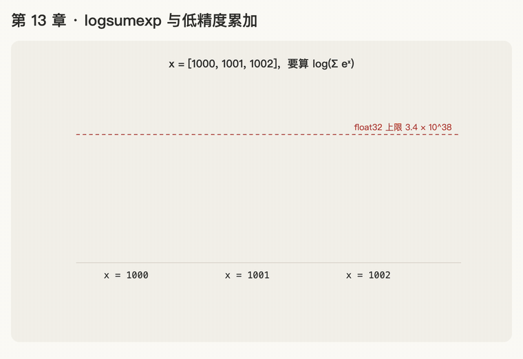

第 13 章 · 规约、矩阵乘与数值稳定
本章回答：
sum(dim=0)和sum(dim=1)到底沿哪个方向加？@、bmm、einsum怎么选，一次矩阵乘法要算多少次？为什么直接算log(sum(exp(x)))会得到 inf，logsumexp是怎么躲过去的？为什么 bf16 一路累加 1000 个 1 只得到 256？
讲解日期：2026-11-14 · 上一章：第 12 章 索引与散射 · 下一章：第 14 章 nn.functional
对应原文：00-overview.md §4.4–§4.5；Transformer 讲义 第 6 章 softmax、第 7 章 饱和；Ultra-Scale Playbook §Mixed Precision Training（distributed-pretraining/materials/text/ultrascale-playbook.md第 2821 行起）；本章输出在本机 torch 2.15.0 上跑过本章缩写：FLOP = FLoating-point OPeration（浮点 / 运算，一次加法或乘法）；einsum = Einstein summation（爱因斯坦 / 求和约定）；bmm = batch matrix multiply（批量矩阵乘）；inf = infinity（无穷大）；全部缩写见 附录 · 缩写与术语表
讲解
第一步：dim 是"被压扁的那一维"（2026-11-14）
规约（reduction） = 很多个数并成一个数：求和、均值、最大值……关键是 dim 参数。
记法：dim=k 就是把第 k 维压扁（消失）。
t = torch.tensor([[1., 2., 3.],
[4., 5., 6.]]) # 形状 (2, 3)
t.sum(0) # tensor([5., 7., 9.]) ← 第 0 维（行方向，2 个）被压扁，剩 3 个
t.sum(1) # tensor([ 6., 15.]) ← 第 1 维（列方向，3 个）被压扁，剩 2 个
t.sum(1, keepdim=True).shape # (2, 1) ← 压成 1 但保留位置（第 11 章第二步）
t.max(-1) # values=[3., 6.], indices=[2, 2] ← max 同时给值和位置
dim=-1 表示最后一维。深度学习里绝大多数规约都在最后一维（每个 token 自己的特征）上做：softmax(-1)、mean(-1)、LayerNorm。
一句话：dim 是被压扁的那一维；keepdim=True 保留位置方便广播回去。
第二步：矩阵乘法的三种写法与它的计算量（2026-11-14）
| 写法 | 形状 | 说明 |
|---|---|---|
A @ B / torch.matmul |
(…, m, k) @ (…, k, n) → (…, m, n) | 最通用，前面的 batch 维按第 11 章广播 |
torch.bmm(A, B) |
(b, m, k) @ (b, k, n) | 只接受恰好 3 维，不广播 |
torch.einsum("bij,bjk->bik", A, B) |
同上 | 用字母写清每一维，适合复杂收缩 |
einsum 怎么读：箭头左边每个输入一组字母，右边是输出。两边都出现的字母保留，只在左边出现的字母被求和掉。
| einsum | 意思 |
|---|---|
"i,i->" |
点积：[1, 2, 3]·[4, 5, 6] = 32 |
"ij->ji" |
转置 |
"bhqd,bhkd->bhqk" |
每个头里 q 和 k 打分（d 被求和掉）＝ \(QK^\top\) |
"bij,bjk->bik" |
批量矩阵乘（实测和 A @ B 完全一致） |
计算量：(m, k) @ (k, n) 的结果有 \(m \times n\) 个数，每个数是 \(k\) 次乘法 + \(k\) 次加法，共
例：4096 × 4096 × 4096 → \(2 \times 4096^3 ≈ 1.37 \times 10^{11}\)。第 5 章本机测得约 10 ms，就是约 13 TFLOP/s（每秒 13 万亿次）。第 23 章算 MFU 就是从这个式子出发。
一句话：@ 最通用，einsum 用字母写清收缩；矩阵乘的计算量是 2mkn。
第三步：exp 会爆——logsumexp 的减最大值技巧（2026-11-14）
softmax 和交叉熵里要算 \(\log \sum_i e^{x_i}\)。直接算：
big = torch.tensor([1000., 1001., 1002.])
torch.exp(big).sum().log() # tensor(inf) ← e^1000 超出 float32 范围（约 3.4 × 10^38）
torch.logsumexp(big, 0) # tensor(1002.4076)
技巧：先把最大值 \(M\) 提出来。
读法：M 加上"每个数减去 M 之后的 exp 和"的 log。减完以后最大的那一项是 \(e^0 = 1\)，其余都 ≤ 1，不会爆。
数字演示：\(M = 1002\)，\(x - M = [-2, -1, 0]\)，\(e^{-2} + e^{-1} + e^0 = 0.135 + 0.368 + 1 = 1.503\)，\(\log 1.503 = 0.4076\)，结果 \(1002 + 0.4076 = 1002.4076\) ✓。
torch.softmax 内部也做了同样的减法，所以 torch.softmax(big, 0) 直接得到 [0.0900, 0.2447, 0.6652]，不会出 NaN。自己手写 softmax 时一定要先减最大值（Transformer 第 7 章讲过为什么分数会很大）。第 21 章的 online softmax / FlashAttention 也是这个技巧的延伸。
一句话：\(\log\sum e^x = M + \log\sum e^{x-M}\)；减掉最大值再 exp 就不会爆。
第四步：低精度累加会"加不动"（2026-11-14）
bf16 只有 8 位有效数字（二进制），大约能分辨 2–3 位十进制有效数字。当累加和变大以后，再加一个小数，可能小到被舍入掉。
实测：用 bf16 一个一个地加 1：
s = torch.zeros((), dtype=torch.bfloat16)
for _ in range(1000):
s = s + torch.tensor(1., dtype=torch.bfloat16)
s # tensor(256., dtype=torch.bfloat16) ← 卡在 256！
为什么是 256：bf16 在 256 附近，相邻两个能表示的数之间差 2。256 + 1 = 257 在正中间，按"舍入到偶数"回到 256，于是再怎么加都是 256。
而 torch.ones(4096, dtype=torch.bfloat16).sum() 得到 4096：PyTorch 的 sum kernel 内部用 float32 累加，最后才转回 bf16。
规矩：数据可以存成低精度，累加器（求和、矩阵乘的内部累加、softmax 的分母、loss、优化器状态）要用 float32。这正是第 9 章混合精度"敏感运算留 float32"、Tensor Core 用"bf16 输入、fp32 累加"的原因。fp16 还有另一个问题：最大只到 65504，torch.tensor([1e4], dtype=torch.float16) * 10 直接变 inf（第 26 章）。
一句话：低精度一路累加会"加不动"（bf16 加 1 卡在 256）；存可以低精度，累加要 float32。
动画演示：logsumexp 与 bf16 累加

可交互版：animations/13-numerics.html。按钮切换"logsumexp"和"bf16 累加"两个场景。
怎么看：
- logsumexp：三根柱子是 \(e^{x_i}\)，直接算时柱子冲出 float32 的上限（红线）；减去最大值后柱子都 ≤ 1；
- bf16 累加：横轴是加了几次，蓝线是 float32 累加（一路涨到 1000），橙线是 bf16 累加（到 256 变平）；
- 放大 256 附近：bf16 能表示的数间隔是 2，257 被舍回 256。
练习与作答记录
题 1：t 形状 (4, 5, 6)。t.sum(1) 的形状是什么？t.mean(-1, keepdim=True) 呢？
作答：（待作答）
题 2：(B=8, T=1024, D=4096) 的输入乘 (4096, 4096) 的权重，一共多少 FLOPs？（可以写成 2 × … 的形式）
作答：（待作答）
题 3：用减最大值的方法手算 \(\log(e^{10} + e^{10})\)。（\(\log 2 ≈ 0.693\)）
作答：（待作答）
口诀
dim 是被压扁的那一维，keepdim 留位置；
矩阵乘算 2mkn，einsum 两边都有的留下、只在左边的求和；
logsumexp 先减最大，exp 就不爆；存可以低精度，累加要用 fp32。
本章复习卡片
- P41（dim = 被压扁的维；
[[1,2,3],[4,5,6]]sum(0) = [5,7,9]，sum(1) = [6,15]） - P42（einsum 读法；矩阵乘 FLOPs = 2mkn）
- P43（logsumexp：\(M + \log\sum e^{x-M}\)；[1000, 1001, 1002] → 1002.4076；直接算 inf）
- P44（bf16 逐个加 1 卡在 256（间隔 2）；sum kernel 内部 fp32 累加；累加器用 fp32）
附录 · 延伸阅读
推荐阅读
| 读什么 | 读哪里 | 读它为了什么 |
|---|---|---|
| ★ Transformer 讲义 | 第 6 章 softmax 与 exp、第 7 章 饱和 | 为什么 exp 和大分数危险 |
| ★ Ultra-Scale Playbook | §Mixed Precision Training（ultrascale-playbook.md 第 2821 行起） |
fp32 / bf16 / fp16 / fp8 的位数和"累加用高精度" |
| CUDA 讲义 第 21 章 online softmax | 全章 | 减最大值技巧在融合 kernel 里怎么流式做 |
| Goldberg 1991「What Every Computer Scientist Should Know About Floating-Point Arithmetic」 | 舍入误差一节（〔在线〕） | 浮点舍入的经典讲解 |
数学原理
- logsumexp 恒等式：\(\log\sum_i e^{x_i} = M + \log\sum_i e^{x_i - M}\)，因为 \(e^{x_i} = e^M e^{x_i - M}\)，提出 \(e^M\) 后取 log 变成 \(+M\)。
- softmax 平移不变：\(\text{softmax}(x) = \text{softmax}(x - M)\)。
- bf16 的间隔：bf16 有 7 位尾数（加隐含位 8 位），在 \([2^e, 2^{e+1})\) 区间内相邻数间隔 \(2^{e-7}\)。256 = \(2^8\)，间隔 \(2^{1} = 2\)。
- 矩阵乘 FLOPs：\(2mkn\)；Transformer 前向每个 token 约 \(2N\) FLOPs（N 为参数量），训练约 \(6N\)（第 23 章）。
公式清单
| 写法 | 意思 |
|---|---|
x.sum(dim, keepdim) / mean / max（返回 values, indices） |
规约 |
A @ B / bmm / einsum |
矩阵乘 |
torch.logsumexp(x, dim) |
稳定的 log-sum-exp |
| \(2mkn\) | 矩阵乘计算量 |
代码对照：把本章的数字用代码算一遍
用 torch 把讲义里的数字跑一遍。代码在仓库本地
pytorch-deep-dive/solutions/chapter-code/ch13_reduce_matmul.py，配套测试tests/test_ch07_15.py；同一章的 notebook：notebooks/ch13_reduce_matmul.ipynb（讲解和代码放在一起，一格一格边读边跑）。Mac 上直接能跑，不需要 GPU：
bash cd pytorch-deep-dive/solutions/chapter-code uv run python ch13_reduce_matmul.py # 一步一步打印 uv run pytest tests/test_ch07_15.py
讲义 ↔ 代码：
| 讲义 | 公式 / 说法 | 写法 | 跑出来 |
|---|---|---|---|
| 第一步 dim | 压扁那一维 | reductions() |
[5, 7, 9]、[6, 15]、keepdim (2, 1) |
| 第二步 einsum / FLOPs | 2mkn | einsum_checks()、matmul_flops |
点积 32；4096³ 是 1.37 × 10¹¹ |
| 第三步 logsumexp | M + log Σ e^{x−M} | logsumexp_demo() |
直接算 inf，logsumexp 1002.4076 |
| 第四步 bf16 累加 | 间隔 2 | bf16_running_sum() |
逐个加卡在 256；sum 得 4096 |
关键几行：
torch.exp(big).sum().log() # inf
torch.logsumexp(big, 0) # 1002.4076
s = s + one # bf16 逐个加：卡在 256
代码里才看得到的 2 件事：
t.max(-1)返回两样：values和indices，不是一个张量。torch.sum对 bf16 不会卡住：kernel 内部用 float32 累加；卡住的是 Python 里一次次s + one。
自己改一改（不影响练习答案）：
- 把
bf16_running_sum改成 float16，看卡在多少。 torch.logsumexp(torch.tensor([-1000., -1000.]), 0)，再和直接算对比。